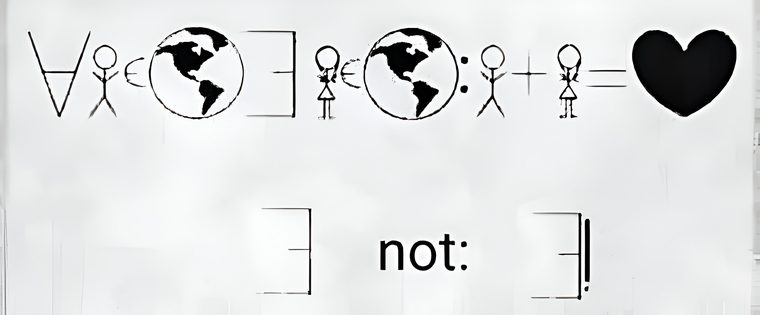
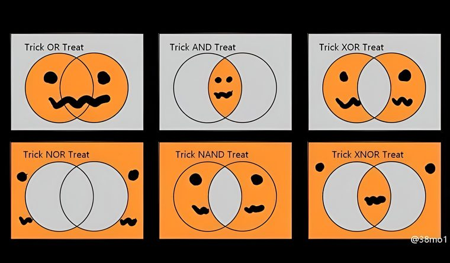

📡 Küldetés-eligazítás
📡 Ikol: Jön a mesterfogás — a következtetés és a kvantorok („minden”, „van olyan”). Kán egyetlen ravasz „minden”-nel egész univerzumokat töröl. Aki felismeri az érvényes és az érvénytelen érvelést, az visszaüthet.
Egyes formulák a változók minden lehetséges igazságértéke mellett igazak. Ezeket tautológiáknak nevezzük, és segítségükkel ellenőrizzük a következtetési szabályokat. A kvantorokkal pedig azt fejezzük ki, hogy egy adott halmaz minden eleméről vagy legalább egy eleméről állítunk valamit.
Tautológiák
A tautológia igazságértéke nem függ a változók igazságértékétől: mindig igaz.
📗 Definíció
Azt a formulát, amely a benne szereplő változók minden lehetséges igazságértékére igaz, tautológiának nevezzük. (Az igazságtáblázatában az utolsó oszlop csupa ⊤.)
✏️ Szimuláció — az elnyelési (abszorpciós) törvény
Mutassuk meg, hogy \(p \lor (p \land q) \Leftrightarrow p\) tautológia:
| p | q | p ∧ q | p ∨ (p∧q) | ⇔ p |
|---|---|---|---|---|
| ⊤ | ⊤ | ⊤ | ⊤ | ⊤ |
| ⊤ | ⊥ | ⊥ | ⊤ | ⊤ |
| ⊥ | ⊤ | ⊥ | ⊥ | ⊤ |
| ⊥ | ⊥ | ⊥ | ⊥ | ⊤ |
Csupa ⊤ → tautológia. ✅
A legfontosabb ismert tautológiák (érdemes megjegyezni!)
¬(p ∨ q) ⇔ ¬p ∧ ¬q
💡 De Morgan a mindennapokban
„Nem igaz, hogy fázom vagy fáradt vagyok” = „nem fázom és nem is vagyok fáradt”. A tagadás „bemegy” a zárójelbe, és a \(\lor\) átvált \(\land\)-ra. Ez a trükk később a halmazoknál és a matematikai bizonyításokban is visszaköszön! 🔁
🎯 Gyors kérdés
Mivel egyenértékű \(\lnot (p \lor q)\) a De Morgan-szabály szerint?
Gyakorolj! Válaszd a bevetésed: (tautológia-e; De Morgannal tagadás; kontrapozíció; ismert tautológia felismerése; egyszerűsítés)
Logikai következtetés
A helyes következtetésben a feltételek igazsága biztosítja a következmény igazságát. Nézzük meg, hogyan ellenőrizhetjük ezt.
📗 Premissza és konklúzió
A feltételeket premisszáknak (\(P₁, P₂, \ldots\)), a belőlük levont következtetést konklúziónak (\(K\)) hívjuk. A következtetés akkor helyes, ha a
P₁ ∧ P₂ ∧ … ⇒ K
formula tautológia — vagyis a premisszák igazságából mindig következik a konklúzió.
✏️ Egy következtetési minta (modus ponens)
\(P₁:\) Ha vasárnap van, együtt ebédel a család. \((p \Rightarrow q)\)
\(P₂:\) Ma vasárnap van. \((p)\)
\(K:\) Együtt ebédel a család. \((q)\)
Helyes, mert \(\bigl((p \Rightarrow q) \land p\bigr) \Rightarrow q\) tautológia. 👨👩👧👦
Négy gyakori következtetési szabály
📘 Kontrapozíció és indirekt bizonyítás
Kontrapozíció: \(p \Rightarrow q\) mindig egyenértékű a fordított-tagadott alakjával: \(\lnot q \Rightarrow \lnot p\). („Ha esik, vizes az út” = „ha nem vizes az út, nem esik”.)
Indirekt (reductio ad absurdum): feltesszük a bizonyítandó állítás ellenkezőjét, és ellentmondásra jutunk — így az eredeti állítás igaz.
✏️ Kontrapozíció a gyakorlatban
Állítás: ha \(n\in\mathbb{Z}\) és \(n^{2}\) páros, akkor \(n\) is páros. Kontrapozícióval: tegyük fel, hogy \(n\) páratlan, azaz \(n = 2k+1\) valamely \(k\in\mathbb{Z}\) esetén. Akkor \(n^{2} = 4k^{2}+4k+1\) páratlan. Beláttuk tehát: ha \(n\) páratlan, akkor \(n^{2}\) is páratlan — és ez éppen az eredeti állítás kontrapozíciója. Mivel a kettő egyenértékű, az eredeti állítás is igaz. ∎
Vigyázz, ez nem indirekt bizonyítás! Indirekt úton azt tennénk fel, hogy \(n^{2}\) páros és \(n\) páratlan egyszerre igaz, és ebből jutnánk ellentmondásra. Itt ellenben egyetlen implikációt cseréltünk ki a vele egyenértékű kontrapozíciójára — azt viszont direkt módon bizonyítottuk.
🏝️ Lovag–lókötő fejtörő
💡 A sziget szabálya
Egy szigeten csak lovagok (mindig igazat mondanak) és lókötők (mindig hazudnak) élnek. Anna azt mondja: „Én lókötő vagyok, VAGY Bea lovag.” Ki micsoda?
Gondolkodtál rajta? Kattints a megoldásért 🔍
Tegyük fel, hogy Anna lókötő. Akkor a mondata hamis. De egy „… vagy …” csak akkor hamis, ha mindkét tagja hamis — vagyis „Anna lókötő” is hamis lenne. Ez ellentmondás (épp azt tettük fel, hogy lókötő)! 🚫
Tehát Anna lovag, így a mondata igaz. Mivel „Anna lókötő” hamis, a „vagy” másik tagjának kell igaznak lennie: Bea lovag. ✅
Anna = lovag, Bea = lovag.
🎯 Gyors kérdés
„Ha esik, vizes az út. Az út NEM vizes.” Mi következik helyesen?
Gyakorolj! Válaszd a bevetésed: (logikai következmény-e; hipotetikus szillogizmus; indirekt gondolatmenet; lovag–lókötő)
Kvantorok
Egy nyitott mondatból úgy is kijelentést alkothatunk, hogy megadjuk: egy adott halmaz minden elemére vagy legalább egy elemére teljesül-e. Ezt a kvantorokkal fejezzük ki.
📗 A két kvantor
Univerzális kvantor \(\forall\) — „minden, bármely, tetszőleges”. (Az angol All megfordított A-ja.)
Egzisztenciális kvantor \(\exists\) — „van olyan, létezik”. (Az angol Exist megfordított E-je.)

⚠️ Mindig kell egy „univerzum”!
A kvantornak mindig meg kell mondani, milyen halmaz elemeire vonatkozik — ez a tárgyalási univerzum. „Mindenki jelen van” → az osztály tanulói; \(\forall x\in \mathbb{R}\) → a valós számok. A vizsgált halmaznak a szövegből vagy az előzményekből egyértelműnek kell lennie.
✏️ Formalizálás — kétféle írásmód
„Minden természetes szám négyzete 4”: (∀x)(x∈ℕ ⇒ x²=4) = (∀x∈ℕ)(x²=4)
„Van olyan valós szám, melynek négyzete 4”: (∃x)(x∈ℝ ∧ x²=4) = (∃x∈ℝ)(x²=4)
Figyeld meg: a \(\forall\) mellé implikáció (\(\Rightarrow\)), a \(\exists\) mellé konjunkció (\(\land\)) kerül. 🔑
📘 Kvantoros kijelentés tagadása
¬(∀x)P(x) ⇔ (∃x)¬P(x) ¬(∃x)P(x) ⇔ (∀x)¬P(x)
A kvantor „átvált” (∀ ↔ ∃), és a tagadás bemegy a mondatba. „Nem minden madár tud repülni” = „van olyan madár, amely nem tud repülni”. 🐦
✏️ Szimuláció a tagadásra
„Van olyan természetes szám, amely kisebb 0-nál”: \((\exists x\in \mathbb{N})(x < 0)\).
Tagadása: \(\lnot (\exists x\in \mathbb{N})(x<0) \Leftrightarrow (\forall x\in \mathbb{N})(x \geq 0)\) — „minden természetes szám nemnegatív” (ami igaz ✅, tehát az eredeti hamis volt).
🎯 Gyors kérdés
Mi a tagadása ennek: „Minden tanuló zongorázik”?
Haladó: kevert kvantorok — számít a sorrend? 🤔
Igen, nagyon! Az univerzum legyen \(\mathbb{Z}\).
\((\forall x)(\exists y)(x + y = 0)\) — „minden \(x\)-hez van \(y\), hogy összegük 0”. Igaz (válaszd \(y = -x\)).
\((\exists y)(\forall x)(x + y = 0)\) — „van egy \(y\), ami MINDEN \(x\)-szel 0-t ad”. Hamis (nincs ilyen közös \(y\)).
A \(\forall\) és \(\exists\) felcserélése tehát megváltoztathatja az igazságértéket. ⚠️
🧾 Gyorsismétlő
Ismételjük át a műveletek igazságértékét és a kvantoros mondatok tagadását.
A négy „nagy” táblázat egyben
| p | q | p ∧ q | p ∨ q | p ⇒ q | p ⇔ q |
|---|---|---|---|---|---|
| ⊤ | ⊤ | ⊤ | ⊤ | ⊤ | ⊤ |
| ⊤ | ⊥ | ⊥ | ⊤ | ⊥ | ⊥ |
| ⊥ | ⊤ | ⊥ | ⊤ | ⊤ | ⊥ |
| ⊥ | ⊥ | ⊥ | ⊥ | ⊤ | ⊤ |
💡 Memóriahorgok
- ∧ (és): zsugori — csak akkor igaz, ha MINDKETTŐ igaz.
- ∨ (vagy): nagyvonalú — csak akkor hamis, ha MINDKETTŐ hamis.
- ⇒ (ha…akkor): csak az „igaz ⇒ hamis” esetben hamis; hamis előtag mellett az implikáció igaz.
- ⇔ (akkor és csak akkor): igaz, ha a két oldal EGYFORMA.
- Kvantor-tagadás: ∀↔∃, és a mondatot tagadd.
💡 Érdekesség — a logika a chipek belsejében
A digitális áramkörökben logikai kapuk valósítják meg az alapműveleteket: AND, OR, NOT, XOR (a mi \(\land , \lor , \lnot , \veebar\) jeleink!) — ezek a logikai kapuk. A kétféle logikai értéket az ilyen áramkörökben 1-gyel és 0-val jelöljük. 👇

💡 Készülj az ellenőrzőre!
Az ellenőrző a logikát és a halmazokat együtt méri, és csak a halmazok témaköre után következik — a felkészítő feladatsor ezért a Halmazok feladatgyűjtemény végén vár, órai és otthoni változatban. Fontos: ez csak gyakorlás — nincs garancia arra, hogy pontosan ennyi vagy ilyen típusú feladat lesz az éles ellenőrzőn; de ha ezek mennek, jó úton jársz! 💪
🎯 Gyors kérdés
Utolsó próba! Melyik állítás IGAZ?
Áttekintettük a kijelentéseket, a logikai műveleteket, a következtetést és a kvantorokat. A következő téma a halmazoké: ott a De Morgan-szabályokat és a kvantorokat is újra használjuk. 👋
Gyakorolj! Válaszd a bevetésed: (kvantoros formalizálás, szavakba öntés, igaz/hamis + ellenpélda, tagadás, kevert kvantorok)
📡 Ikol: Az Igazság Csarnokát teljesítetted, kadét. SZVETI átirányít a következő szektorba — Dr. Bizarr és a halmazok világa vár.